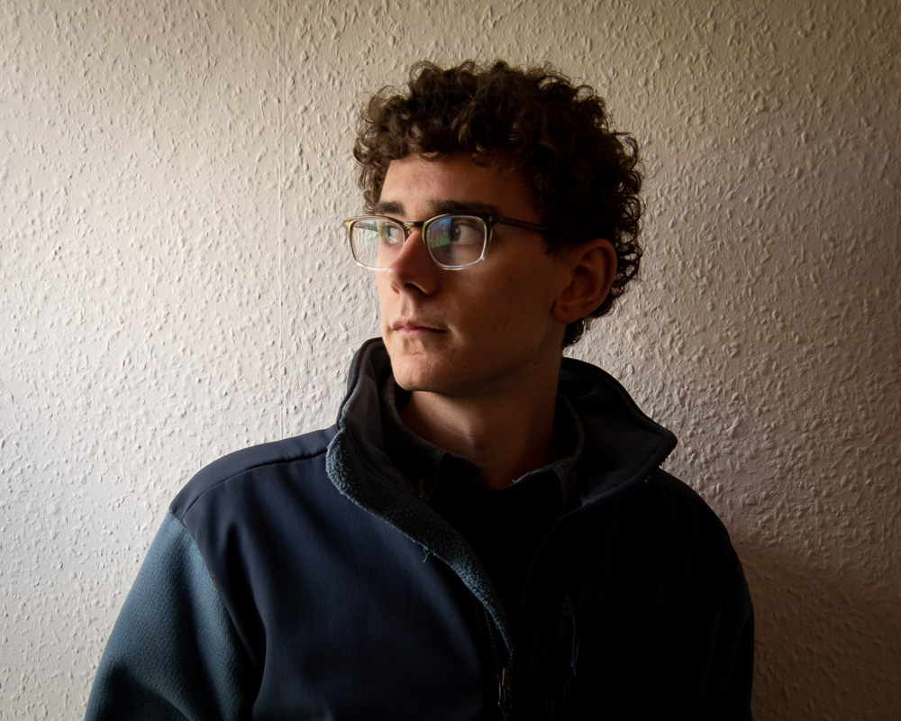

Who am I? I'm still
figuring that out
myself, but here's
what I know for sure:
I am a photographer,
writer, designer, and
developer from Wis-
consin, USA, studying
Marine & Natural
History Photography
at Falmouth University
in Cornwall, UK.
Check out my CV.
• • •
In my evolving photo-
graphic practice, I use
abstraction, spare and
striking composition,
and only the best nat-
ural light to simplify
the landscape.
I emphasize emotion
over the literal image
and truth over object-
ivity, in hope that one
day I might capture
how it feels to see.
Read my dissertation
(it's long; you've been
warned) for more on
my photographic
philosophy.
• • •
I am a self-taught
web developer. In
2019, after one look
at the price of a web-
site builder, I decided
to code up my own,
from scratch.
Two years, three
languages, and four
iterations later, I’m
still learning and still
proud of this messy
work-in-progress.